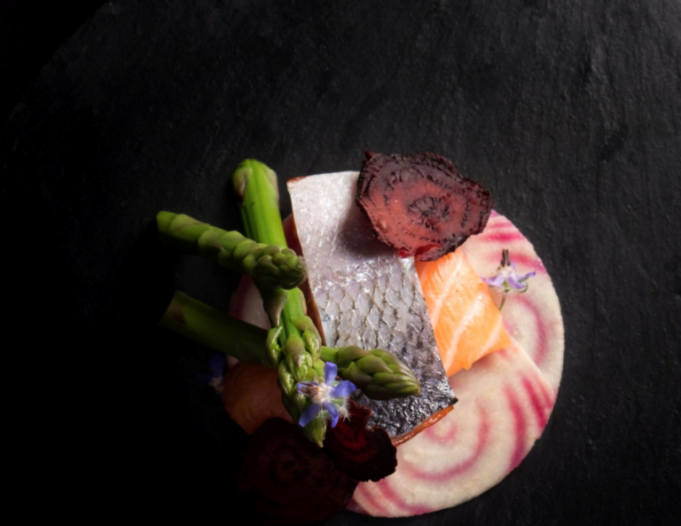

Dans le noir ?

Depuis 2004, le restaurant Dans le Noir ? vous propose de déguster, au cœur de Paris, une cuisine gastronomique, créative, de saison dans l’obscurité totale accompagnés et servis par des guides inattendus. Dîner ou déjeuner dans le noir absolu est une expérience originale qui permet de réévaluer notre perception du goût tout en nous réappropriant nos sens, de ré-enchanter notre relation au monde et aux autres et de vivre une rencontre surprenante avec la différence.
51, rue Quincampoix 75004 Paris
01 42 77 98 04